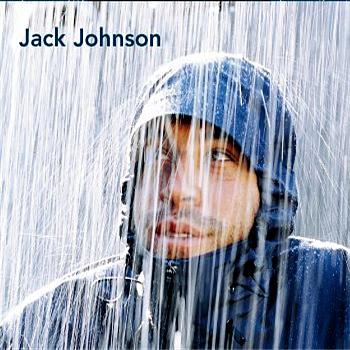
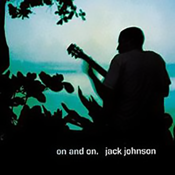
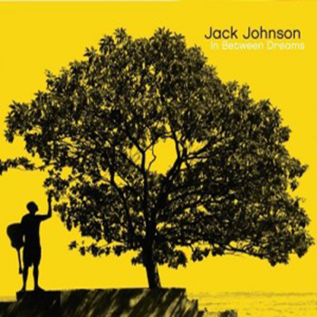
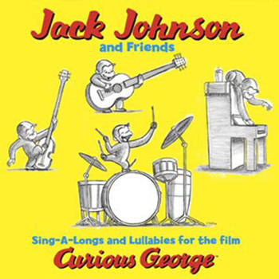
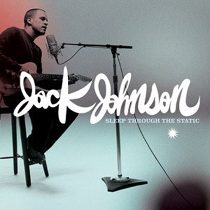
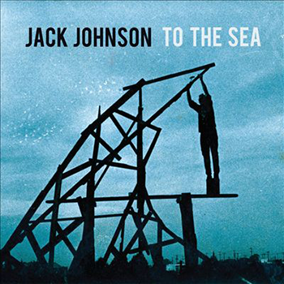

Discography

- Inaudible Melodies – 3:35
- Middle Man – 3:14
- Posters – 3:13
- Sexy Plexi – 2:07
- Flake – 4:40
- Bubble Toes – 3:56
- Fortunate Fool – 3:48
- The News – 2:26
- Drink the Water – 3:21
- Mudfootball (for Moe Lerner) – 3:03
- F-Stop Blues – 3:10
- Losing Hope – 3:52
- It's All Understood – 5:28

- Times Like These – 2:22
- The Horizon Has Been Defeated – 2:33
- Traffic in the Sky – 2:50
- Taylor – 3:59
- Gone – 2:10
- Cupid – 1:05
- Wasting Time (Johnson, Adam Topol, Merlo Podlewski) – 3:50
- Holes to Heaven – 2:54
- Dreams Be Dreams – 2:12
- Tomorrow Morning – 2:50
- Fall Line – 1:35
- Cookie Jar – 2:57
- Rodeo Clowns – 2:38
- Cocoon – 4:10
- Mediocre Bad Guys – 3:00
- Symbol in My Driveway – 2:50

- Better Together - 3:27
- Never Know - 3:32
- Banana Pancakes(Steven Harang) - 3:12
- Good People - 3:28
- No Other Way - 3:09
- Sitting, Waiting, Wishing - 3:03
- Staple It Together(Jack Johnson, Merlo Podlewski) - 3:16
- Situations - 1:17
- Crying Shame(Jack Johnson, Adam Topol) - 3:06
- If I Could - 2:25
- Breakdown(Jack Johnson, Dan Nakamura & Paul Huston) - 3:32
- Belle - 1:43
- Do You Remember - 2:24
- Constellation - 3:21

- Upside Down - 3:28
- Broken - 3:55
- People Watching - 3:19
- Wrong Turn - 2:53
- Talk of the Town (with guitar & vocals by Kawika Kahiapo) - 3:22
- Jungle Gym (Featuring G. Love) - Garrett Dutton - 2:24
- We're Going to Be Friends (Covering The White Stripes, orig 2001) - Jack White - 2:18
- The Sharing Song - Adam Topol, Zach Gill - 2:45
- The 3 R's (revision of Schoolhouse Rock! song "Three Is a Magic Number") - Bob Dorough; new lyrics by Johnson - 2:55
- Lullaby (Featuring Matt Costa) - Matt Costa - 2:48
- With My Own Two Hands (Covering, and featuring Ben Harper) - Ben Harper - 2:59
- Questions- 4:10
- Supposed to Be - 2:54

- All at Once – 3:38
- Sleep Through the Static – 3:43
- Hope (Jack Johnson, Zach Rogue) – 3:42
- Angel – 2:02
- Enemy – 3:48
- If I Had Eyes – 3:59
- Same Girl – 2:10
- What You Thought You Need – 5:27
- Adrift – 3:56
- Go On – 4:35
- They Do, They Don't – 4:10
- While We Wait – 1:26
- Monsoon (Jack Johnson, Merlo Podlewski) – 4:17
- Losing Keys – 4:28
- Home* (Acoustic) (*Bonus track on some versions e.g. Australian release)" – 3:30

- You and Your Heart – 3:13
- To the Sea – 3:30
- No Good with Faces – 3:31
- At or With Me – 3:58
- When I Look Up – 0:58
- From the Clouds – 3:05
- My Little Girl – 2:21
- Turn Your Love – 3:13
- The Upsetter – 3:50
- Red Wine, Mistakes, Mythology (lyrics: Johnson & Zach Gill, music: Johnson, Gill, Merlo Podlewski & Adam Topol) – 4:03
- Pictures of People Taking Pictures – 3:20
- Anything but the Truth – 2:54
- Only the Ocean (lyrics: Johnson, music: Johnson, Gill, Podlewski & Topol) – 3:40

- I Got You - 2:59
- Washing Dishes - 3:26
- Shot Reverse Shot - 3:10
- Never Fade - 4:02
- Tape Deck - 3:21
- Don't Believe a Thing I Say - 3:14
- As I Was Saying - 3:45
- You Remind Me of You - 2:24
- Radiate (Johnson, Merlo Podlewski, Zach Gill, Adam Topol) - 4:15
- Ones and Zeros (Johnson, Podlewski, Gill, Topol) - 4:27
- Change (featuring Ben Harper) - 3:14
- Home - 3:01